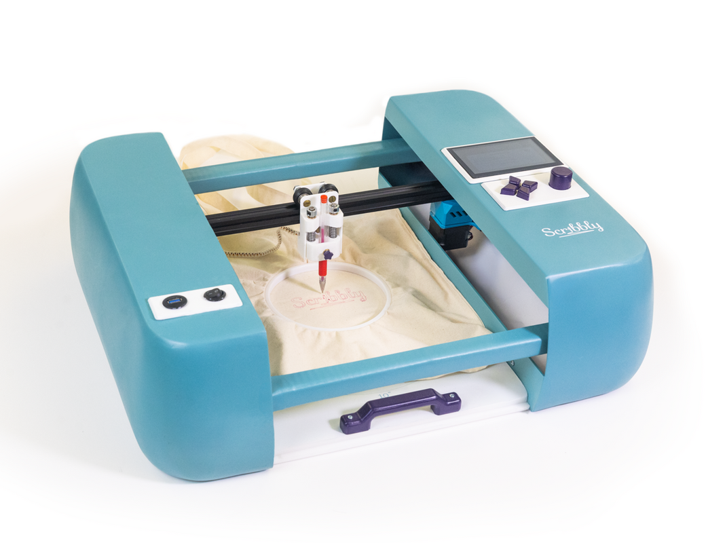
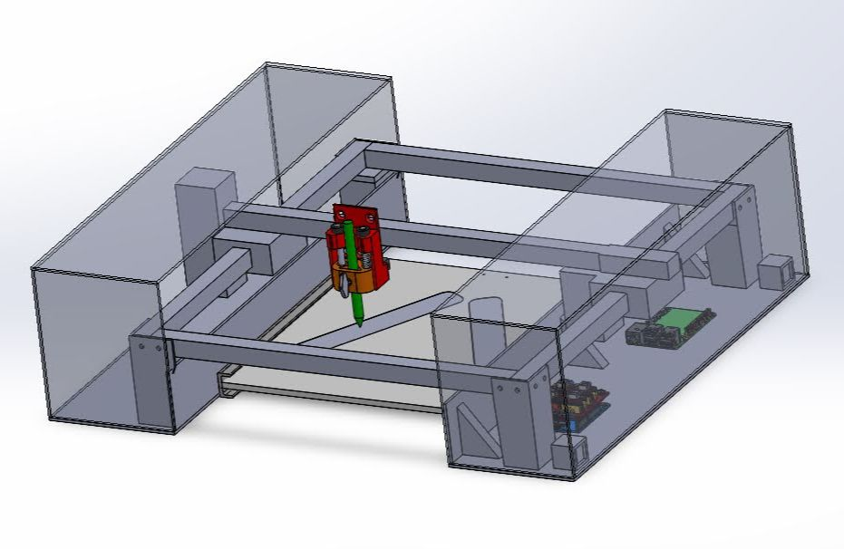
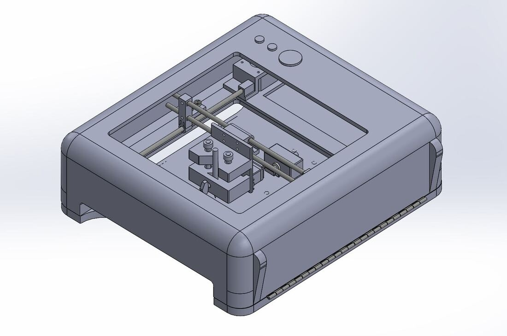
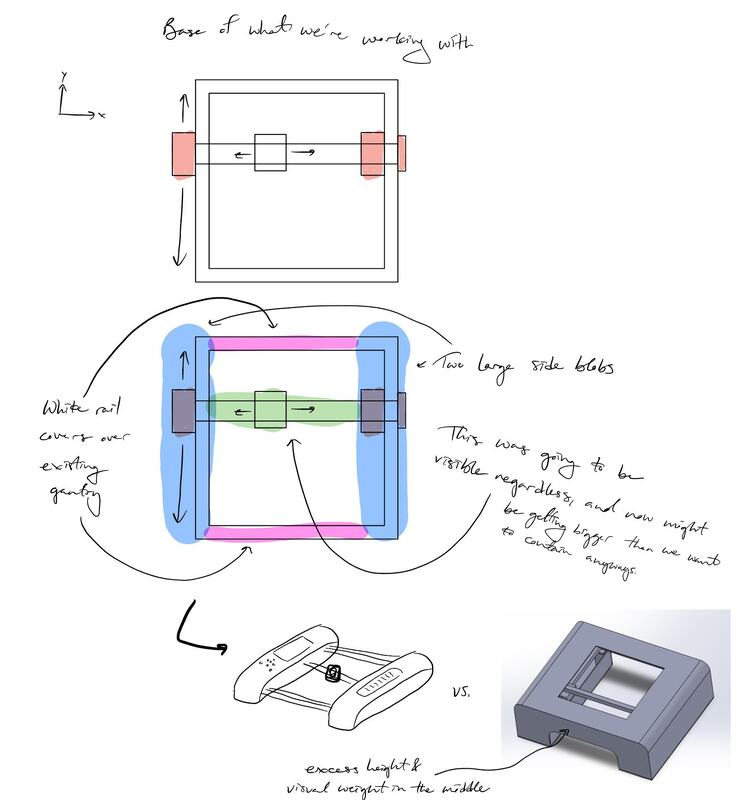
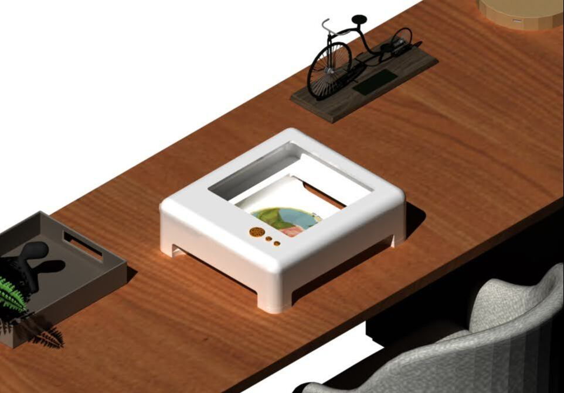
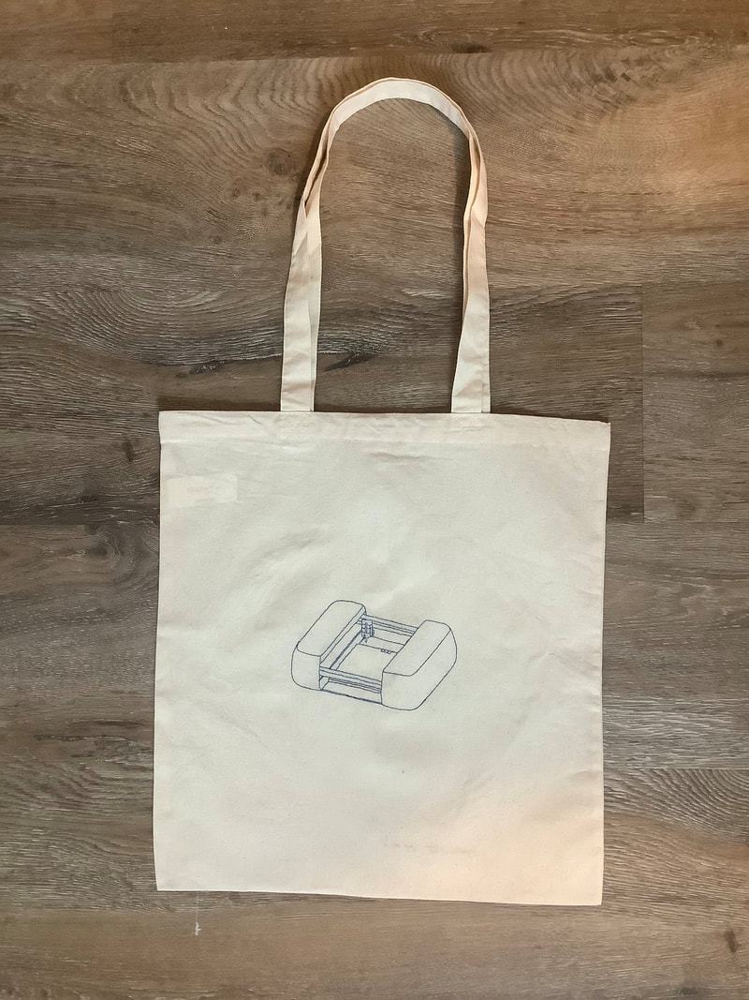
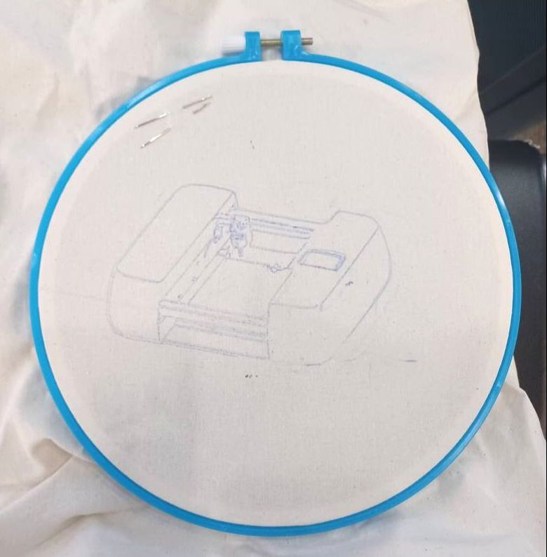

Packaging
The gantry needed useful planar travel while fitting inside a product with significant space constraints.
A team-developed embroidery accessory that turns a user-provided image into thin, washable guide lines on fabric. My primary responsibility was the compact XY gantry and its mechanical integration.

The gantry had to fit within the product envelope while moving a range of fabric and hoop sizes accurately and reliably.
Scribbly converts digital designs into washable guides drawn directly onto fabric so users can embroider the pattern afterward.
My primary responsibility was the gantry system: mechanical architecture, CAD, motion-stage mounts, moving components, assembly, alignment, and testing. The broader team developed the enclosure, product form, garment interface, electronics, and other product subsystems.
Packaging, reliability, and precision had to be balanced within a constrained consumer-product envelope.
The gantry needed useful planar travel while fitting inside a product with significant space constraints.
The mechanism deliberately used fewer belts and fewer opportunities for failure, treating simplicity as a performance requirement.
Motor speed, torque, available power, payload, stiffness, and positioning precision had to be considered together.
The motion system used NEMA 17 stepper motors, four 0.25-inch linear rods, oil-impregnated bushings, and spring-loaded belt clips for tension.

Two rods ran front-to-back and two left-to-right. The rod diameter balanced low moving mass with sufficient stiffness for the target motion.

The gantry geometry and mounting had to coordinate with the broader team's enclosure and product packaging while preserving usable motion.
Assembly features were designed around practical alignment, tensioning, guidance, and constraint rather than assuming perfect manufactured geometry.
The gantry was squared with a dial indicator before being bolted to the stationary frame.
Spring-loaded belt clips provided tension without bulky dedicated tensioners.
Linear rods and plain bushings created a compact guidance system with low part count and straightforward assembly.
The mechanism was designed to avoid overconstraint, reducing binding and improving tolerance of manufacturing and assembly variation.
The gantry moved from requirements and architecture through detailed CAD, assembly, dial-indicator alignment, and full-product testing.
Translate product needs into travel, payload, speed, torque, power, and precision requirements.
Arrange motors, belts, rods, bushings, and moving stages within the available package.
Assemble, tension belts, square the motion system with a dial indicator, and secure it to the frame.
Test the gantry inside the full product and verify usable motion.
The completed motion system provided approximately 10 inches of travel and about 0.5 mm positioning resolution while carrying a lightweight payload of roughly 5 ounces.
The final product successfully turned digital artwork into physical guide patterns on fabric.
For the gantry, the central challenge was balancing mechanical design, packaging, motor sizing, manufacturing, alignment, reliability, and system integration.
These images show the broader team's product development as well as the gantry and final drawing results.



